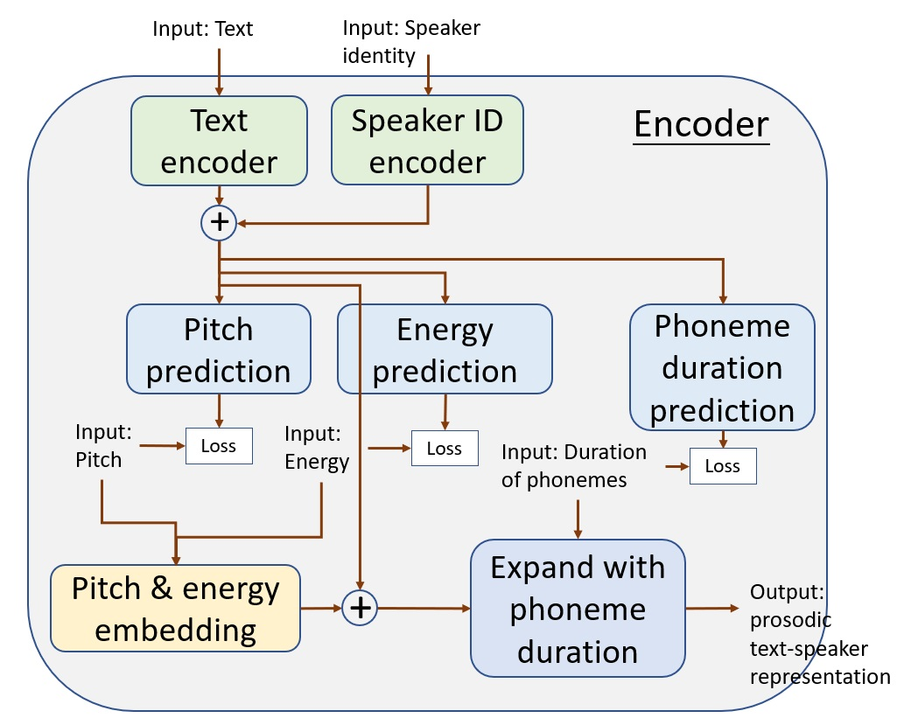
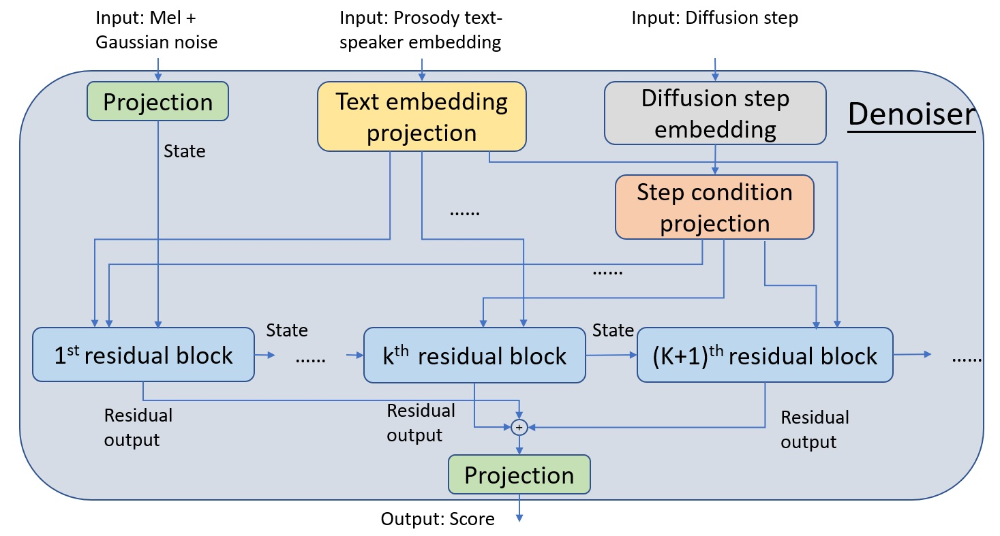
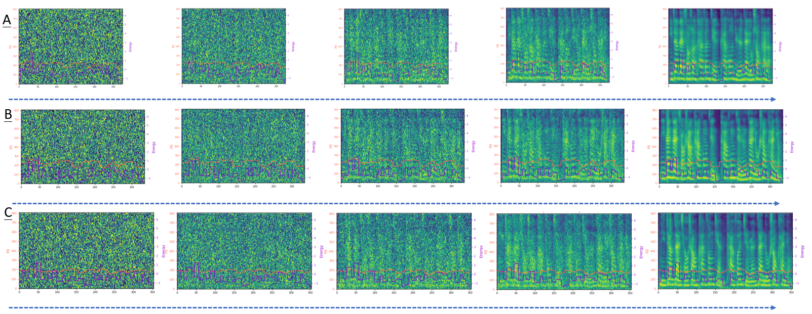

联系方式：wu.shoule@protonmail.com, shiziqiang7@gmail.com, 13621160486
本展示DEMO主要展示和介绍TalkingIto，一种基于Ito随机微分方程的新一代多说话人语音合成的最新技术。
TalkingIto是一种基于encoder-denoiser框架结构对多个说话人的声音进行建模的技术，也就是多 说话人语音合成。我们的框架相比于其他的许多基于深度神经网络 (DNN) 的方法，更容易训练， 网络结构选择灵活，合成的效果更好。在我们的框架中，首先用encoder来同时实现文本信息和 说话人信息的隐表示，而denoiser能够实现在此text-speaker隐表示的条件输入下，将随机白噪 声逐渐denoise成text-speaker对应的原始语音。Denoiser的实现机制是通过基于随机微分方程 （SDE）的扩散过程实现的。该过程能够实现目标分布，在我们这里就是mel-spectrogram的分布 和简单高斯分布之间互相的连续正反变换。正变换将mel-spectrogram扩散为高斯分布，而反变 换将高斯分布变换为mel-spectrogram数据分布。其中正反变换由两个不同但是紧密关联的SDE控制。 实验结果显示，我们的方法在主观和客观结果上均达到最高性能。
我们的TalkingIto的关键模块有两个，一个是用于同时实现文本信息和说话人信息的隐表示的encoder，一个是将随机白噪 声逐渐denoise成text-speaker对应的原始语音的denoiser。
TalkingIto里的encoder网络结构

TalkingIto里的denoiser网络结构

您可以试听下TalkingIto合成的不同说话人的声音样本，相应文本如下:
1. 爆炸地点在太原街南七马路路口。
2. 附近的住户霍佳伟向南方周末记者介绍，太原南街是条商业街。
3. 我正在睡觉，听到那个声音特别吓人，窗户外面，蘑菇云就起来了。
4. 永乐建材店的老板也在医院，妻子被爆炸时碎裂的玻璃崩伤，扎破了后背，伤口两厘米，正在接受缝合。
5. 据中共沈阳市委宣传部21日晚最新通报，事故已造成4人死亡；3人重伤，44人轻伤，均送往医院进行救治；安排36家宾馆，对事故波及群众进行妥善安置。事故原因正在调查之中。
| 原始真人语音 | FastSpeech 2合成的语音 | Tacotron 2合成的语音 | ItoTTS合成的语音 |
|---|---|---|---|
以“你站在桥上看风景，看风景人在楼上看你。”为输入文本，TalkingIto从高斯噪声信号中逐步生成不同说话人（A，B，C）对应mel谱图的过程

[1]. Shoule Wu, Ziqiang Shi. TALKINGITO: MULTI-SPEAKER SPEECH GENERATION WITH ENCODER-DENOISER ˆ FRAMEWORK USING ITO STOCHASTIC DIFFERENTIAL EQUATIONS.